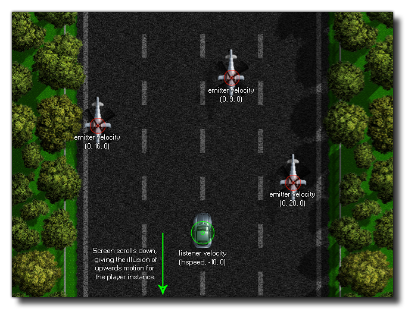

audio_listener_velocity
Changes the doppler calculations of the listener within the audio space.
Syntax :
audio_listener_velocity(vx, vy, vz);
| Argument | Description |
|---|---|
| x | The x velocity component of the listener (default 0). |
| y | The y velocity component of the listener (default 0). |
| z | The z velocity component of the listener (default 0). |
Returns : N/A
Description
This function can be used to give the listener doppler effects and simulate audio motion based on the vector that is resolved from the given relative x, y and z positions (for more information on vectors,
please see Maths - Vectors). If the listener itself is not ever going to move, or the movement is not a constant motion, you would normally not need
to set these values, but, for example, if you are making a scrolling game where the player has a constant bottom to top movement and the enemies a constant top to bottom movement, you would set the listener
and emitter velocities (for emitters you would use audio_emitter_velocity) to the appropriate vectors to simulate the correct doppler effect as
they move past the player instance.
The image below shows how this could be setup for the example game given above:

Example :
if speed > 0
{
audio_listener_velocity(abs(hspeed), abs(vspeed), 0);
}
The above code checks to see if the player instance speed is over 0 and if it is it then uses the appropriate absolute hspeed and vspeed components to set the listener velocity.